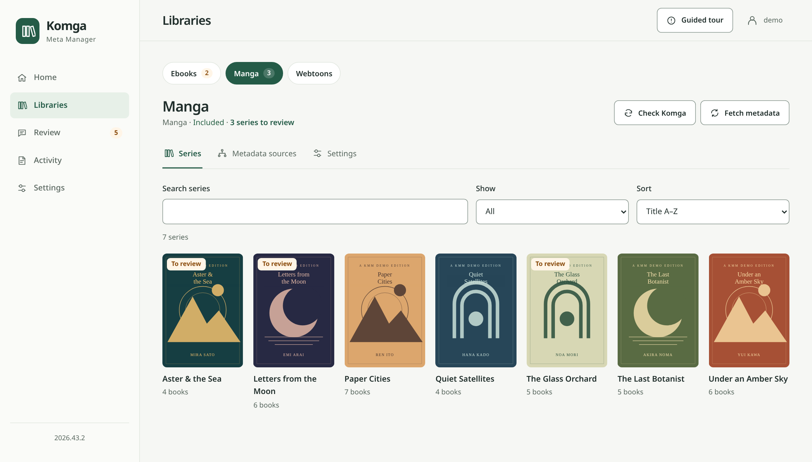
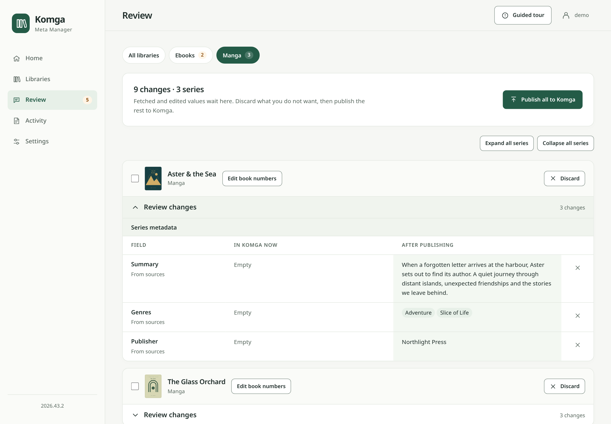
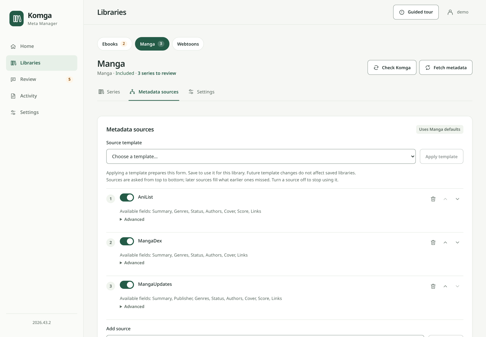
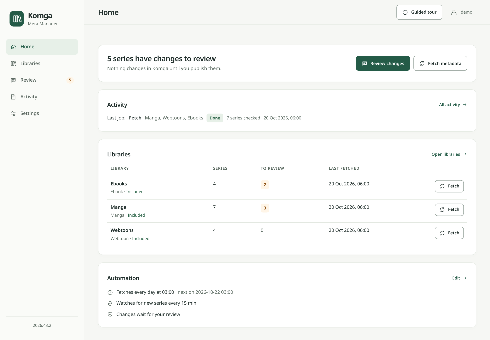
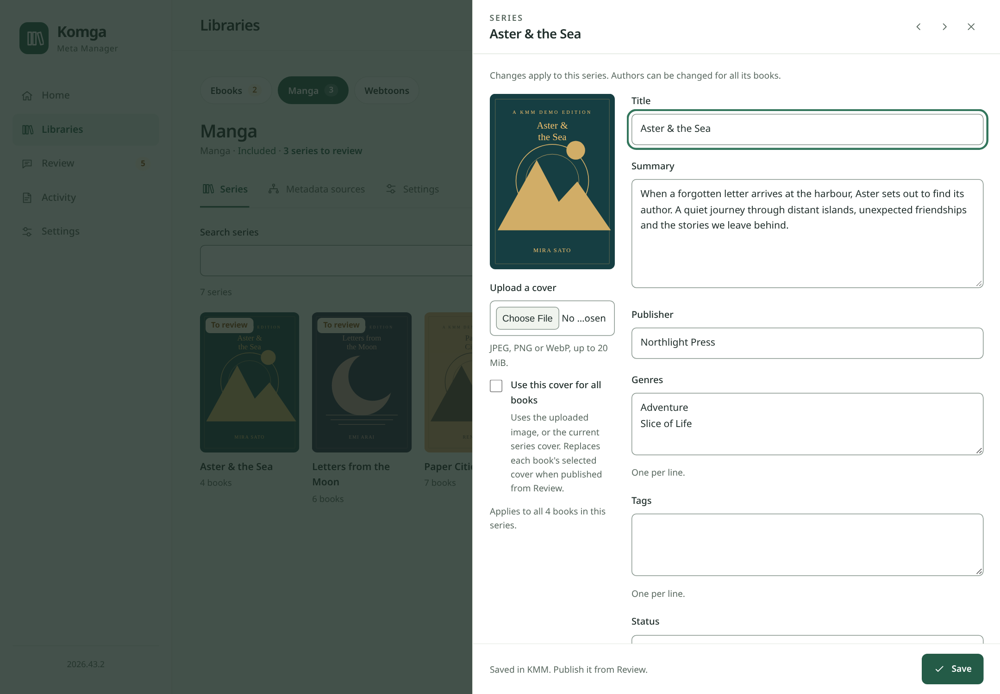
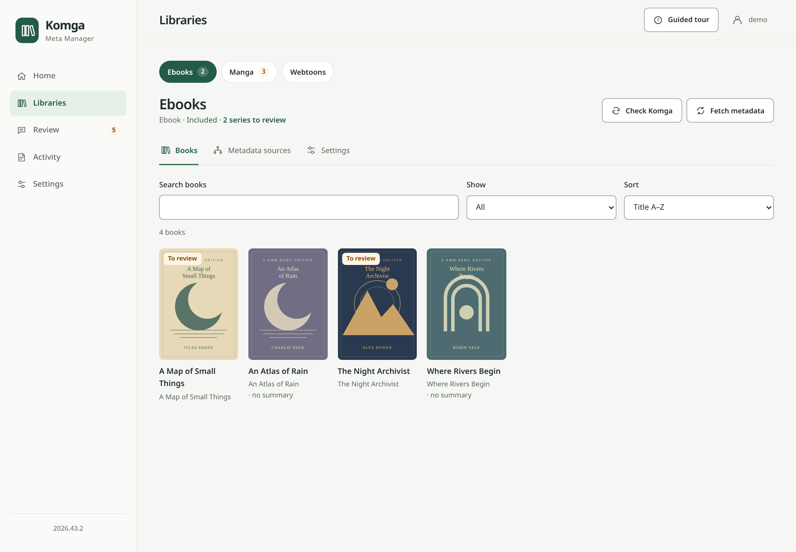
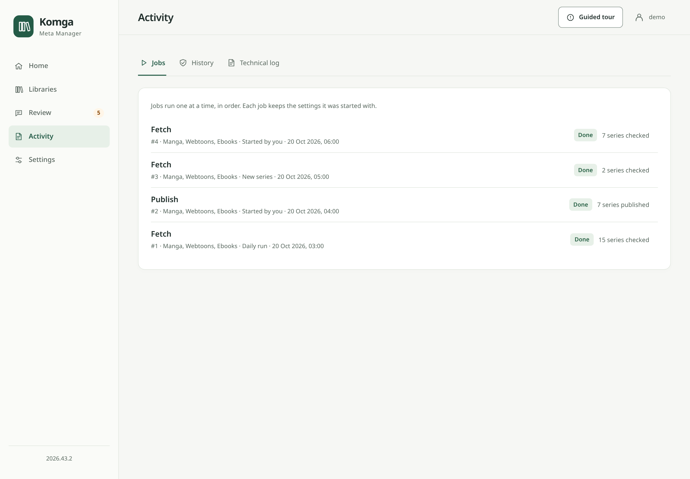
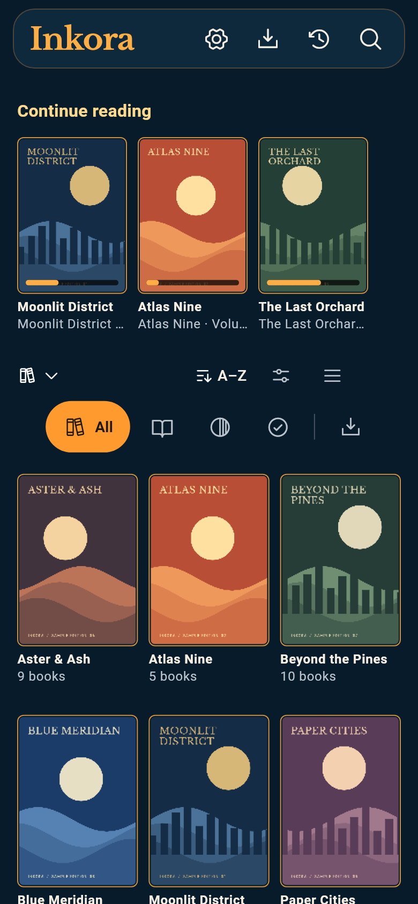

Le compagnon des métadonnées pour Komga
Un peu d’ordre.
Une plus belle bibliothèque.
Votre collection raconte de belles histoires.
Offrez-leur les détails qu’elles méritent.
Retrouvez les métadonnées manquantes, ajoutez votre touche et vérifiez chaque modification avant son envoi à Komga.
Auto-hébergé. Libre. Votre collection, vos règles.

De bonnes métadonnées commencent
par les bonnes sources.
- AniList
- MangaDex
- MangaUpdates
- Open Library
- Google Books
- BnF
01 / Un parcours maîtrisé
Sans surprise.
Des métadonnées soignées.
La récupération n’est qu’un début. KMM conserve les propositions dans son propre catalogue pour vous montrer clairement la suite.


- 01
Retrouvez les pièces manquantes.
Choisissez vos bibliothèques et vos sources. KMM rassemble les métadonnées localement ; la récupération ne modifie jamais Komga.
- 02
Vérifiez à votre rythme.
Comparez les valeurs avant et après. Gardez une proposition, écartez un champ ou ajoutez votre propre modification.
- 03
Publiez quand tout est prêt.
Envoyez toutes les modifications ou seulement certaines séries à Komga. Vous choisissez quand mettre votre bibliothèque à jour.
Les valeurs existantes et les champs verrouillés sont respectés par défaut. La publication automatique reste un choix explicite.
02 / Votre collection, vos règles
Des rayons différents.
Des besoins différents.
Séries de mangas, webtoons à faire défiler, ebooks individuels. Adaptez les sources et les règles à chaque bibliothèque.
Partez d’un modèle de sources.
Utilisez les modèles manga, webtoon ou ebook intégrés. Réordonnez les sources et enregistrez vos propres modèles.
Gardez les détails qui comptent.
Complétez les champs vides, laissez-les tels quels ou effacez-les explicitement. Personnalisez une bibliothèque ou conservez vos réglages par défaut.
Réservez un traitement adapté aux ebooks.
Identifiez chaque livre par son ISBN ou son titre et son auteur. Choisissez vous-même l’édition lorsqu’un résultat demande votre attention.

03 / Une place pour les détails
Moins de gestion.
Une collection qui vous ressemble.
Un espace de travail dans votre navigateur, du début à la fin. Parcourez le catalogue, modifiez une description, suivez une tâche. Sans YAML.








Un coup de main au quotidien. Planifiez une récupération quotidienne ou surveillez les nouvelles séries. Les tâches automatiques attendent une vérification par défaut.
Chez vous, sur votre serveur. Docker et un navigateur suffisent pour démarrer. Configuration, modifications et historique restent dans votre base KMM locale.
Toutes les captures KMM montrent la vraie interface avec un catalogue fictif isolé et des couvertures originales de démonstration. Elles illustrent la version de développement ; les versions publiées peuvent différer. L’interface de KMM reste en anglais.
Également par Simon Verbois / Autour de Komga
Inkora
Votre bibliothèque est prête.
Profitez d’un chapitre.
KMM s’occupe des métadonnées. Inkora vous accompagne sur téléphone et tablette pour lire mangas, webtoons et ebooks, avec des téléchargements pour lire hors connexion.
Android est testé. La validation native iOS reste à effectuer.
Deux projets indépendants. Un même foyer pour vos histoires : Komga.

04 / Installez-vous
Votre prochaine amélioration
commence ici.
Prévoyez un serveur Komga fonctionnel et une clé API. KMM s’installe à ses côtés avec sa propre interface web et une configuration persistante.
- 01
Démarrez le conteneur.
Enregistrez ce contenu dans
compose.ymldans un nouveau dossier, puis exécutezdocker compose up -d. - 02
Connectez votre Komga.
Ouvrez localhost:8765, créez votre compte KMM et testez la connexion au serveur.
- 03
Choisissez. Récupérez. Vérifiez.
Sélectionnez vos bibliothèques et leur type de contenu. Récupérez les métadonnées et vérifiez les propositions avant publication.
services:
kmm:
image: simonverbois/komga-meta-manager:latest
restart: unless-stopped
ports:
- "8765:8765"
volumes:
- ./config:/config
Sauvegardez ./config régulièrement. Ce dossier contient vos réglages, votre compte, le catalogue local et l’historique.
Quelques bonnes questions.
La récupération modifie-t-elle mes métadonnées Komga ?
Non. La récupération enregistre les propositions dans KMM. Seule la publication les écrit dans Komga. La publication automatique peut être activée explicitement dans les réglages d’automatisation.
Quelles sources puis-je utiliser ?
Les bibliothèques de mangas et de webtoons utilisent AniList, MangaDex et MangaUpdates. Les ebooks utilisent Open Library, Google Books et BnF. Google Books nécessite une clé API. La disponibilité et la qualité des correspondances dépendent du catalogue de chaque source.
KMM respecte-t-il mes modifications existantes ?
Par défaut, les valeurs existantes et les verrous Komga sont conservés. Chaque bibliothèque peut hériter des réglages par défaut ou définir ses propres règles. Les modifications manuelles KMM sont conservées pendant la récupération, sauf remplacement explicitement demandé.
Ai-je besoin d’Inkora pour utiliser KMM ?
Non. KMM et Inkora sont deux projets indépendants qui fonctionnent avec Komga. Utilisez KMM pour gérer les métadonnées et le lecteur Komga de votre choix pour lire.